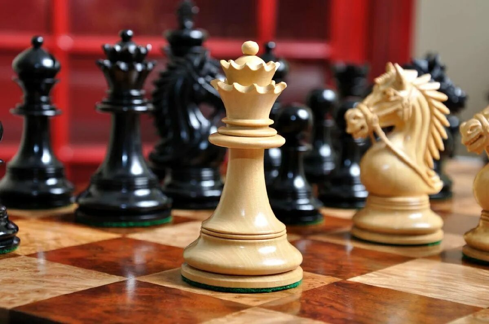
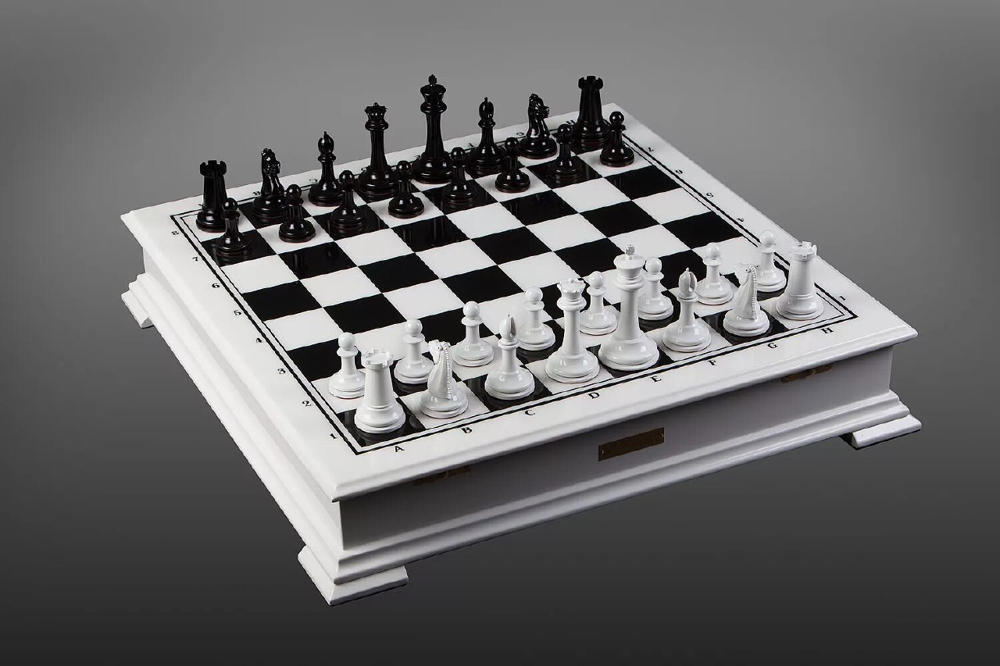

Шахматы — это стратегическая настольная игра, которая заставляет игроков думать на несколько ходов вперед, предвосхищая ходы противника.
Они требуют глубокого понимания тактики, позиционной игры и способности адаптироваться к меняющейся динамике игры.
Благодаря своей богатой истории и статусу интеллектуального спорта, шахматы известны тем, что они развивают навыки критического мышления и способствуют развитию терпения и концентрации внимания.